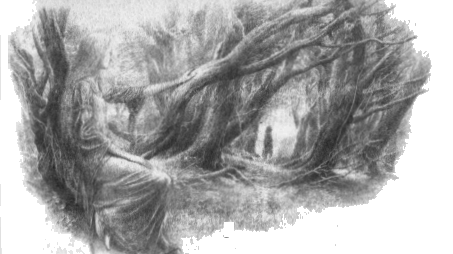
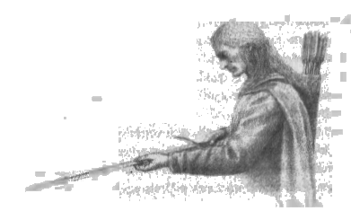

5
Doriath krallığındaki çocukluk senelerinde, Túrin onu nadiren görse de, Melian Túrin’e göz kulak oluyordu. Ama koruluklarda yaşayan Nellas adlı bir genç kız vardı; ve Melian’ın isteği üzerine, ormana girerse Túrin’i izliyor, tesadüf eseriymiş gibi onunla orada karşılaşıyordu. Sonra orada oyun oynuyorlar ya da el ele yürüyüş yapıyorlardı; çünkü Túrin hızlı büyüyordu ve Nellas onun yaşında bir kız gibi görünüyordu; ve elf ömrünce çok seneler yaşamış olsa da, onun yaşında bir kızın yüreğine sahipti. Túrin, Doriath âdetleri ve orada yaşayan yabanıl şeyler hakkında Nellas’tan çok şey öğreniyordu, ve Nellas ona, daha eski, daha incelikli, sözcükler açısından daha zengin olan kadim diyarın âdetince Sindarin dilini konuşmayı öğretiyordu. Böylece, bir süreliğine Túrin neşeleniyor, ama sonra yine ruhuna bir gölge düşüyordu ve bu dostluk bir bahar sabahı gibi geçip gidiyordu. Çünkü Nellas Menegroth’a gitmiyordu ve taştan çatılar altında yürümeye gönülsüzdü; bu yüzden, Túrin’in çocukluğu geçip giderken ve düşünceleri insanların işlerine dönerken, Nellas’ı gittikçe daha az görmeye başladı ve sonunda ona uğramaz oldu. Ama Nellas, gizlice de olsa hâlâ ona göz kulak oluyordu.
Túrin Menegroth malikanelerinde dokuz sene yaşadı. Gönlü ve düşünceleri devamlı kendi soyuna dönüyordu ve zaman zaman onlardan haber alıp teselli oluyordu. Çünkü Thingol Morwen’e mümkün olduğunca haberci yolluyordu ve Morwen de oğluna haber yolluyordu; böylece Túrin Morwen’in durumunun rahatladığını, kız kardeşi Niënor’un kuzeyin kasvetinde bir çiçek gibi güzelleştiğini öğreniyordu. Ve Túrin büyüdü, insanlar arasında uzun boylu biri oldu, Doriath Elflerini geçti ve gücü, dayanıklılığı Thingol’un diyarında ünlendi. O senelerde çok daha fazlasını öğrendi, kadim günlerin tarihçelerini ve eskilerin büyük başarılarını hevesle dinledi ve az konuşan, dalgın biri oldu. Sağlamyaylı Beleg sık sık onu görmek için Menegroth’a geliyordu ve onu araziye çıkarıyor, ahşap işlemeciliği, okçuluk ve (daha çok sevdiği) kılıç kullanmayı öğretiyordu; ama el sanatlarında o kadar yetenekli değildi, çünkü kendi gücünü öğrenmekte ağırdı ve sık sık, yaptığı bir şeyi ani bir darbe ile bozuyordu. Başka konularda da talih onu sevmiyor gibiydi, bu yüzden tasarladıklarının yolunda gitmediği sık sık oluyordu ve arzu ettiği şeyi başaramıyordu; dostluğu da kolay kolay kazanamıyordu, çünkü neşeli biri değildi, nadiren gülüyordu ve gençliğine gölge düşmüştü. Yine de, onu iyi tanıyanlar onu seviyor, saygı duyuyordu ve Kral’ın üvey oğlu olarak şereflendiriliyordu.
Ama Doriath’ta bunu kıskanan biri vardı ve Túrin erkekliğe yaklaşırken kıskançlığı daha da arttı: adı Saeros’tu. Saeros gururlu biriydi, kendinden düşük ve değersiz gördüklerine karşı kibirliydi. Ozan Daeron’la arkadaş oldu, çünkü o da şarkılarda yetenekliydi; ve insanları sevmezdi, en sevmedikleri de Tek-elli Beren’in kanından olanlardı. “Tuhaf değil mi?” derdi, “Bu diyar bu mutsuz ırktan bir kişiye daha açıldı. Diğeri Doriath’a yeterince zarar vermedi mi?” Bu yüzden Túrin’e ve onun yaptığı her şeye yan bakar, söyleyebildiği kötü şeyleri söylerdi; ama sözleri sinsi, kötülüğü örtülüydü. Túrin’le yalnızken karşılaşırsa, onunla kibirli bir tavırla konuşur, onu horgördüğünü açıkça belli ederdi; ve uzun süre boyunca onun kötü sözlerine sessizlikle yanıt vermiş olsa da, Túrin ona karşı dikkatli davranır oldu, çünkü Saeros Doriath halkının ileri gelenlerindendi ve Kral’ın danışmanıydı. Ama Túrin’in sessizliği Saeros’un canını sözleri kadar çok sıkıyordu.
On yedi yaşına bastığı sene, Túrin’in ızdırabı yenilendi; çünkü o sene evinden aldığı haberler kesilmişti. Morgoth’un gücü her sene artmıştı ve artık Hithlum’un tamamı onun gölgesi altındaydı. Kuşkusuz, Húrin’in halkı ve akrabalarının işleri hakkında çok şey biliyordu ve planı gerçekleşsin diye onları bir süre taciz etmemişti; ama şimdi, bu amacı yerine getirmek için, Gölgeli Dağlardaki bütün geçitleri yakından izliyordu, öyle ki büyük tehlikeyi göze almadan kimse Hithlum’a girip çıkamıyoıdu, ve Narog ile Teiglin pınarlarının, Sirion’un yukarılarının çevresi ork kaynıyordu. Öyle bir zaman geldi ki, Thingol’un habercileri dönmez oldu ve o da daha fazlasını göndermedi. Korunaklı sınırların ötesine birini göndermeye her zaman gönülsüzdü ve Dor-lómin’deki Morwen’e, tehlikeli yollardan halkından haberci göndererek yaptığı iyiliğin emsali yoktu.
Artık ne tür yeni kötülükler dolaştığını bilmeyen ve Morwen ile Niënor’un başına kötü bir şey geldiğinden korkan Túrin’in yüreği ağırlaşmıştı; ve günler boyunca sessizce oturdu, kara kara Hador Evi’nin ve Kuzey insanlarının düşüşünü düşündü. Sonra kalktı ve Thingol’u görmeye gitti; ve onu Melian’la birlikte Menegroth’un koca kayını Hirilorn’un altında otururken buldu.
Thingol hayretle Túrin’e baktı, aniden önünde evlatlığı yerine bir insan, sert ve gururlu, beyaz bir yüzdeki derin gözlerle ona bakan, uzun boylu, siyah saçlı bir yabancı gördü; ama Túrin konuşmadı.
“Ne istiyorsun, evlatlığım?” dedi Thingol, ve onun isteyeceği şeyin küçük olmayacağını tahmin etti.
“Zincir zırh, kılıç ve boyuma uygun bir kalkan, beyim,” diye yanıt verdi Túrin. “Aynı zamanda, izninle, atalarımın Ejder-miğferini istiyorum.”
“İstediklerini alacaksın,” dedi Thingol. “Lâkin, neye hizmet edecek bu silahlar?”
“Bir erkeğe ve hatırlayacak soydaşları olan bir oğula,” dedi Túrin. “Aynı zamanda, silah konusunda yiğit yoldaşlara ihtiyacım var.”
“Sana kılıçlı şövalyelerim arasında bir yer vereceğim, eğer ki bundan böyle silahın kılıç olacaksa,” dedi Thingol. “Dilediğin buysa, onlarla birlikte bataklıklarda savaş talimleri yapabilirsin.”
“Yüreğim Doriath Bataklıklarının ötesine gitmemi söylüyor,” dedi Túrin. “Çünkü ben savunma yapmayı değil, düşmanımıza saldırmayı istiyorum.”
“O zaman yalnız gitmelisin,” dedi Thingol. “Angband’a karşı savaşta halkımın üstleneceği vazifeyi kendi bilgeliğimle tayin ediliyorum, Húrin oğlu Túrin. Bu zamanda, silah kuşanmış hiçbir Doriath gücü göndermeyeceğim; ne de öngörebildiğim bir gelecekte gerçekleşecek bu. ”
“Ama sen dilediğin yere gitmekte serbestsin, Morwen’in oğlu,” dedi Melian. “Melian Kuşağı, müsaademizle gelenlerin gidişine mani olmaz.”
“Bilgece öğütler seni durdurmazsa,” dedi Thingol.
“Öğüdünüz nedir, beyim?” dedi Túrin.
“Boyun posun insan gibi, ve hattâ şimdiden çoğu insanda olandan fazlasına sahipsin,” diye yanıt verdi Thingol; “lâkin, henüz rüşdüne erişmiş sayılmazsın. Bu gerçekleşene kadar sabırlı olmalısın, gücünü sınamalı ve eğitmelisin. İşte bundan sonra, belki soydaşlarını hatırlayabilirsin; lâkin bir insanın yalnız başına Karanlık Efendi’ye karşı, ne kadar sürerse sürsün, elf beylerinin savunmasına yardım etmekten daha fazlasını yapabileceği umudu pek az.”
Bunun üzerine Túrin şöyle dedi: “Soydaşım Beren daha fazlasını yaptı.”
“Beren, bir de Luthien,” dedi Melian. “Ama Luthien’in babasıyla bu şekilde konuşman fazla cesurca. Bana göre, alın yazın pek âlâ değil, Morwen’in oğlu Túrin, lâkin senin içinde bir yücelik var ve iyi de olsa kötü de, kaderin elf halkınınkine dolanmış. Kendine dikkat et, kaderin kötü olmasın diye.” Biraz sonra yine konuştu ve şöyle dedi: “Şimdi git, evlatlığımız; ve Kral’ın öğüdünü tut. Bu, kendi fikrinden daha bilgece olacaktır. Lâkin rüşdüne eriştikten sonra, bizimle Doriath’ta uzun süre yaşayacağını sanmıyorum. Eğer ki, gelecek günlerde Melian’ın sözlerini hatırlarsan senin için iyi olacak: yüreğinin hararetinden ve soğuğundan kork, ve elinden geliyorsa sabırlı olmaya gayret et. ”
Sonra Túrin onların önünde eğildi ve ayrıldı. Ve kısa süre sonra Ejder-miğferini taktı, silah aldı ve kuzey bataklıklarına gitti ve orada orklara ve Morgoth’un tüm hizmetkarlarına ve yaratıklarına karşı bitmek tükenmek bilmez bir savaş veren elf savaşçılarına katıldı. Böylece, daha çocukluktan yeni çıkmış olmasına rağmen gücünü ve cesaretini kanıtladı; ve soydaşlarının hatalarını hatırladığından, her zaman cüretliydi ve pek çok mızrak, ok ve çarpık ork kılıcı yarası aldı.
Ama kaderi onu ölümden esirgiyordu; ve Dor-lómin’in Ejder-miğferinin yine ortaya çıktığı söylentisi koruluklarda dolaştı, Doriath’ın çok uzaklarında duyuldu. Bunun üzerine pek çok kişi meraklandı, şöyle dedi: “Bir insanın ruhu ölümden dönebilir mi; yoksa Hithlumlu Húrin gerçekten de Cehennem Çukurlarından mı kaçtı?”
O zamanlarda, Thingol’un bataklık nöbetçileri arasında, silah kullanmakta Túrin’den güçlü tek bir kişi vardı ve o da Sağlamyaylı Beleg’di; ve Beleg ile Túrin her tehlikede yoldaştı, yabanıl koruluklarda kol geziyorlardı.
Üç sene böyle geçti ve bu süre içinde Túrin Thingol’un malikanesine nadiren geldi; artık görünüşüne ve tavırlarına da dikkat etmiyordu, saçları bakımsızdı, zırhı hava koşullan yüzünden lekelenmiş gri bir pelerinle kaplıydı. Ama tesadüf eseri, Túrin’in ayrılışından sonraki üçüncü yaz, Túrin yirmi yaşındayken, dinlenmek arzusuyla, silahlarının da onarılması için bir demirciye ihtiyaç duyarak, beklenmedik bir biçimde Menegroth’a geldi ve bir akşam malikaneye gitti. Thingol orada değildi, yazın zaman zaman yapmaktan hoşlandığı gibi Melian’la birlikte yeşil koruluklara gitmişti. Yol yorgunu ve dalgın olduğundan Túrin dikkat etmeden oturdu; ve talihsizlik eseri, bir toplantıda, diyarın büyükleri arasına, Saeros’un oturmaya alışık olduğu yere oturmuştu. Geç gelen Saeros, Túrin’in bunu gururundan, onu küçük düşürmek niyetiyle yaptığını düşünerek kızdı; orada oturanların Túrin’i paylamadığını, aralarına oturmaya layık biri olarak hoş karşıladığını görünce öfkesi daha da arttı.
Bu yüzden, Saeros bir süre onlarla aynı fikirdeymiş gibi davrandı ve Túrin’in karşısında bir başka yere oturdu. “Bataklık nöbetçisi aramıza nadiren teşrif ederek sevindiriyor bizi,” dedi; “ve onunla konuşma şerefine nail olmak uğruna her zamanki yerimi memnunlukla bırakıyorum ona.” Ama Avcı Mablung ile konuşmakta olan Túrin ayağa kalkmadı ve kısa bir “Teşekkür ederim” ile yanıt verdi.
Sonra Saeros, sınırdan haberler, yabanda yaptığı işler hakkında sorular yağdırdı ona; ama sözleri latif olsa da, sesindeki alaycılığı işitmemek imkansızdı. Bunun üzerine Túrin ihtiyatı ele aldı ve çevresine bakındı ve sürgünün acılığını anladı; çünkü elf evlerinin onca aydınlığına ve kahkahasına rağmen, onun düşünceleri Beleg’e ve koruluklardaki hayatına, ve oradan da uzaklara, Dor-lómin’deki, babasının evindeki Morwen’e dönüyordu; ve Túrin düşüncelerindeki karanlık yüzünden kaşlarını çattı ve Saeros’a yanıt vermedi. Bunun üzerine, kaş çatışın ona yönelik olduğunu sanan Saeros öfkesine hâkini olamaz oldu; ve altın bir tarak çıkardı ve masanın üzerine, Túrin’in önüne fırlatarak bağırdı: “Kuşkusuz ki, Hithlumlu İnsan, bu masaya aceleyle geldin, ve hırpani pelerinin mazur görülebilir; ama kafanı da bir dikenli çalı kümesi gibi bakımsız bırakmanın manası yok. Ve belki kulakların açıkta olsaydı, sana söylenenleri daha iyi dinlerdin.” Túrin hiçbir şey söylemedi, ama bakışlarını Saeros’a çevirdi ve onların karanlığında bir ışıltı vardı. Ama Saeros uyarıyı dikkate almadı ve bakışlarına küçümsemeyle karşılık verdi, herkesin duyabileceği şekilde şunları söyledi: “Eğer bu kadar vahşi ve korkunçsa Hithlum’un insanları, o diyarın kadınları nasıldır kimbilir? Yoksa, tıpkı geyikler gibi yalnızca kendi saçlarına bürünmüş bir biçimde mi koşuyorlar?”
Sonra Túrin bir içki kadehi alarak Saeros’un yüzüne fırlattı ve Saeros ciddi bir halde yaralanarak geriye düştü; ve Túrin kılıcını çekti, ona doğru koşacak oldu, ama Mablung onu engelledi. Sonra Saeros ayağa kalkarak masaya kan tükürdü ve yaralı ağzına rağmen elinden geldiğince konuştu: “Daha ne kadar barındıracağız bu orman kaçkınını? Bu gece kim yönetmekte burayı? Kral’ın kanunu, malikanesindeki kullarını incitenlere karşı ağırdır; ve orada kılıç çekenler için kanun kaçağı ilan edilmek en hafif sondur. Sana dışarıda yanıt verebilirim Orman Kıçkını!” Ama Túrin masanın üzerinde kan görünce sakinleşmişti; silkelenerek Mablung’un elinden kurtuldu ve tek kelime etmeden oradan ayrıldı.
Sonra Mablung Saeros’a şöyle dedi: “Senin canını sıkan nedir bu akşam? Bu kötülükten seni sorumlu tutuyorum; hem belki Kral’ın kanunu, yaralı bir ağzın, sataşmaların için adil bir karşılık olduğuna karar verir.”
“O budalanın bir sıkıntısı varsa, bırak Kral’ın hükmüne sunsun,” diye yanıt verdi Saeros. “Lâkin burada kılıç çekilmesi, böyle bir sebepten mazur görülemez. Eğer ki Orman Kaçkını bana malikanenin dışında kılıç çekerse, onu öldüreceğim.”
“Aksi de olabilir,” dedi Mablung. “Ancak ölen her kim olursa olsun, Doriath’tan çok Angband’a yaraşır, bir şey olur, ve daha muazzam bir şerrin önü açılır. Hakikat şu ki, kuzeyden gelen bir gölgenin uzandığını ve dokunduğunu hissediyorum. Kulak ver ki Saeros, gururun yüzünden Morgoth’un emelini gerçekleştirmeyesin, ve unutma ki sen bir Eldarlısın.”
“Bunu unutmadım,” dedi Saeros; ama gazabı dinmedi ve kötü niyeti gece boyunca işledi, yarasını besledi.
Saeros sabahleyin, Túrin bataklıklara dönme niyetiyle Menegroth’tan ayrılırken, ona pusu kurdu. Túrin henüz pek az yol gitmişti ki, Saeros kılıcını çekerek, kolunda kalkanı ile, koşarak arkadan saldırdı. Ama yabanda ihtiyatlı olmak üzere eğitilmiş olan Túrin onu gözucuyla gördü ve kenara sıçrayarak hızla kılıcını çekti, düşmanına döndü. “Morwen!” diye bağırdı, “seninle alay eden, şimdi horgörüsünün cezasını görecek!” Ve Saeros’un kalkanını yardı ve sonra hızlı kılıç hamleleri ile dövüştüler. Ama Túrin uzun süredir zorlu bir okulda eğitim görüyordu ve elfler kadar çevik, ama daha güçlü olmuştu. Kısa sürede üstünlüğü ele geçirdi ve Saeros’un kılıç kolunu yaralayarak, onun merhametine kalmasını sağladı. Sonra ayağını Saeros’un düşürdüğü kılıcın üzerine koydu. “Saeros,” dedi, “seni uzun bir yarış bekliyor ve giysilerin sana engel olacaktır; saçların yeterli olmalı.” Ve aniden onu yere fırlatarak soydu ve Saeros Túrin’in büyük gücünü hissederek korktu. Ama Túrin onun kalkmasına izin verdi ve sonra, “Koş, koş, kadınlarla alay eden!” diye bağırdı. “Koş! Geyikler kadar hızlı koşamazsan, seni arkadan dürtüklerim.” Sonra kılıcının ucuyla Saeros’un kaba etlerini dürtükledi; ve Saeros dehşetle imdat isteyerek koruluğun içine kaçtı; ama Túrin av köpeği gibi peşinden gidiyordu ve Saeros nasıl koşarsa koşsun, ne yana kaçarsa kaçsın, kılıç yine de arkasında, onu kışkırtıyordu.
Saeros’un feryatları kovalamacaya pek çok başkasını çağırdı ve onlar da arkalarından gittiler, ama ancak en hızlı olanlar koşuculara ayak uydurabiliyordu. Mablung bunların en başındaydı ve huzursuz olmuştu, çünkü sataşma ona kötü gelmiş olsa da, “sabah uyanan şer, gece çökmeden Morgoth’un eğlencesi olur”; ve dahası, elf halkından birini, mesele yargıya bırakılmadan, maksatlı bir şekilde mahcup düşürmek, büyük bir yanlış sayılırdı. O sırada, ilk önce Saeros’un öldürme niyetiyle Túrin’e saldırdığını kimse bilmiyordu.
“Dur, dur, Túrin!” diye bağırdı Mablung. “Ormanda ork-işi bu yaptığın!”
“Ork-işi önceydi; bu yalnızca ork- oyunu,” diye seslenerek yanıt verdi Túrin. Mablung konuşmadan önce Saeros’u bırakmak üzereydi, ama şimdi bağırarak onun peşinden koştu yine; ve sonunda yardımdan ümidini kesen ve ölümünün yakın olduğunu düşünen Saeros, çılgınca koşmaya devam etti ve sonunda Esgalduin’i besleyen bir derenin yüksek kayalıkların arasından derin bir yarığa döküldüğü yerin kenarına geldi, ve yarık bir geyiğin atlaması için bile genişti. Dehşete kapılmış olan Saeros yine de atlamayı denedi; ama uzak kenarda ayağı kaydı ve haykırarak geriye düştü, suyun içindeki büyük bir taşa çarptı. Doriath’taki hayatı bu şekilde sona erdi; ve uzun zaman Mandor’un ellerinde kalacaktı.
Túrin onun derede yatan cesedine baktı ve düşündü: “Mutsuz aptal! Buradan sonra Menegroth’a yürümesine izin verecektim. Şimdi, hak etmediğim halde bana bir suç yüklemiş oldu.” Ve dönüp karanlık bakışlarla, gelip kenarda yanında durmuş olan Mablung ile arkadaşlarına baktı. Bir sessizlikten sonra, Mablung ciddi bir tavırla konuştu: “Heyhat! Yalnız şimdi bizimle birlikte geri dönmelisin Túrin, zira Kral bu fiiliyat hakkında hüküm vermeli.” Ama Túrin şöyle dedi: “Kral adil olsaydı, beni suçsuz bulurdu. Ama bu, onun danışmanlarından biri değil miydi? Bir kral neden dostu olarak kötü yürekli birini seçsin? Onun kanununu ve hükmünü reddediyorum.”
“Sözlerin fazlasıyla gururlu,” dedi Mablung, genç adama acımasına rağmen. “Bilgelik öğren! Bir kaçağa dönüşmeyeceksin. Bir dost olarak, benimle dönmeni istiyorum. Başka tanıklar da var. Hakikati öğrendiğinde Kral’ın seni affedeceğini ümit edebilirsin.”
Ama Túrin elf evlerinden çekiniyordu, tutsak edilmekten korkuyordu; ve Mablung’a şöyle dedi: “Talebini reddediyorum. Boş yere Kral Thingol’un affını aramayacağım; ve şimdi, onun benim için belirleyeceği sonun beni bulamayacağı bir yere gideceğim. İki seçeneğiniz var: ya gitmeme izin verirsiniz, ya da kanunuza uyuyorsa beni öldürürsünüz. Çünkü sayınız beni canlı yakalamaya yetmez.”
Túrin’in gözlerindeki ateşten, sözlerinin doğru olduğunu anladılar ve geçmesine izin verdiler. “Bir ölüm yeterli,” dedi Mablung.
“Bunu ben istemedim, ama yasını da tutmuyorum,” dedi Túrin. “Mandos onu adil bir biçimde yargılasın; ve eğer canlıların dünyasına dönecek olursa, daha bilge olsun. Hoşçakalın!”
“Uğurlar olsun!” dedi Mablung; “zira, dileğin budur. Şayet böyle devam edersen, yolunun iyi olmasını dilemek. Üzerinde bir gölge var. Yeniden karşılaştığımızda, onun daha da koyulaşmamış olmasını dilerim.”
Túrin buna yanıt vermedi, yanlarından ayrıldı ve hızla, tek başına, kimsenin bilmediği bir yere gitti.
Túrin Doriath’ın kuzey bataklıklarına dönmediğinde ve ondan hiçbir haber alınamadığında, onu aramak için bizzat Sağlamyaylı Beleg’in Menegroth’a geldiği ve ağır bir yürekle Túrin’in yaptığı işlere ve kaçışına dair haberleri aldığı söylenir. Kısa süre sonra Thingol ile Melian evlerine geri döndüler, çünkü yaz sonu yaklaşıyordu; ve Kral olanları duyduğu zaman şöyle dedi: “Bu eksiksiz bir biçimde dinlemem gereken acı bir mesele. Danışmanım Saeros öldürülmüş, evlatlığım Túrin kaçmış olsa dahi, yarın yargı makamına oturacak ve hükmümü açıklamadan önce her şeyi gerektiği gibi dinleyeceğim.”
Ertesi gün Kral salondaki tahtına oturdu ve Doriath’ın bütün başları ve büyükleri çevresine toplandı. Sonra pek çok tanık dinlendi ve bunlar arasında en çok ve en açık konuşan Mablung’du. Ve masadaki tartışmayı anlatırken, Kral’a Mablung’un gönlü Túrin’den yanaymış gibi geldi.
“Húrin oğlu Túrin’in dostu olarak mı konuşuyorsun?” dedi Thingol. “Öyleydim, lâkin hakikati daha uzun vakittir, daha fazla seviyorum,” diye yanıt verdi Mablung. “Beni sonuna dek dinleyin, beyim!”
Túrin’in veda sözlerine dek her şey anlatıldığında, Thingol içini çekti; ve önünde oturanlara baktı ve şöyle dedi: “Heyhat! Yüzlerinizde bir gölge görüyorum. Diyarıma nasıl sızmış bu? Şer iş başında. Saeros’u sadık ve bilge bilirdim; lâkin, yaşasaydı, öfkemi hissederdi, zira yaptığı münasebetsizlik pek fena ve malikanede gerçekleşen her bir fiil için onu suçluyorum. Şimdilik, Túrin’i affettim. Yalnız, gazabının dinmesi gerektiği vakit yaptıklarını göz ardı edemem. Saeros’un mahçup edilmesi ve ölümüne kovalanması, işlenen suçtan daha muazzam kusurlar. Sert ve kibir dolu bir yüreğe delalet ediyorlar.”
Sonra Thingol bir süre düşüncelere daldı ve sonunda hüzünle konuştu. “Bu nankör bir evlatlık ve aslında konumuna göre fazla gururlu bir insan. Beni ve kanunumu küçük gören birini nasıl barındırabilirim, pişmanlık duymayan birini nasıl affederim? Kararım bu olmalı. Túrin’i Doriath’tan sürüyorum. Diyarıma girmeye kalkışırsa, yargılanmak üzere huzuruma getirilecek; ve ayaklarımın dibinde af dilemezse, artık o, benim oğlum olmayacak. Bunu adil bulmayan varsa, şimdi konuşsun!”
Bunun üzerine salonda bir sessizlik oldu ve Thingol kararını ilan etmek üzere elini kaldırdı. Ama o anda Beleg telaşla içeri girdi ve haykırdı: “Beyim, konuşabilir miyim?”
“Geç kaldın,” dedi Thingol. “Diğerleri ile birlikte çağrılmamış miydin?”
“Çağrıldım, beyim,” diye yanıt verdi Beleg, “ama geç kaldım; tanıdığım birini arıyordum. Şimdi, hükmünüzü vermeden önce, dinlenilmesi gereken bir tanık getiriyorum en nihayet.”
“Söyleyecek sözü olanların hepsi çağrılmıştı,” dedi Kral. “Dinlediklerimden daha fazla ağırlığı olacak ne söyleyebilir bana?”
“İşittiğiniz zaman, kendiniz karar verirsiniz,” dedi Beleg. “İnayetinizi hak etmişsem, bana müsaade edersiniz.”
“Müsaade ediyorum,” dedi Thingol. Sonra Beleg dışarı çıktı ve koruluklarda yaşayan, Menegroth’a hiç gelmeyen Nellas adlı genç kızı elinden tutarak içeri getirdi; Nellas, onu izleyen gözler kadar, sütunlu salon ve taştan çatıdan da korkuyordu. Ve Thingol konuşmasını istediğinde, şöyle dedi: “Beyim, bir ağaçta oturuyordum”; ama sonra Kral’dan ürkerek sustu ve daha fazlasını söyleyemedi.
Bunun üzerine Kral gülümsedi ve şöyle dedi: “Bunu başkaları da yapmış, ama bana bahsetme gereği duymamışlardı.”
“Başkaları da yaptı gerçekten,” dedi Nellas, onun gülümsemesinden cesaret alarak. “Luthien dahi! Ben de onu ve insan Beren’i düşünüyordum o sabah.”
Thingol buna yanıt vermedi ve artık gülümsemiyordu da, bunun yerine Nellas’ın konuşmasını bekledi.
“Zira Túrin bana Beren’i hatırlatıyordu,” dedi Nellas sonunda. “Onların akraba olduğu söylendi bana ve bazıları tarafından yakınlıkları görülebiliyor; yakından bakan bazıları.”
Bunun üzerine Thingol sabırsızlandı. “Öyle olabilir,” dedi. “Lâkin Húrin oğlu Túrin beni küçük görerek gitti ve bir daha onu görüp, akrabalıklarını okuyamayacaksın. Çünkü şimdi hükmümü açıklayacağım.”
“Kralım, efendim!” diye haykırdı Nellas bunun üzerine. “Bana tahammül et, bırak ilk önce ben konuşayım. Túrin’in ayrılışını seyretmek maksadıyla bir ağaçta oturmuştum; ve Saeros’un kılıç ve kalkanla ağaçların arasından fırlayıp, Túrin’in üzerine doğru atıldığını gördüm.” O anda salonda bir uğultu oldu; ve Kral elini kaldırarak şöyle dedi: “Kulağıma, olası gelenden de vahim haberler getirmişsin. Söylediklerine dikkat et artık; zira bu bir hüküm oturumu.”
“Beleg de bana öyle demişti,” diye yanıt verdi Nellas, “ve sırf bu nedenle buraya gelmeye cürret edebildim, ki Túrin yanlış yargılanmasın. O yiğit biri, lâkin aynı zamanda merhametli. O ikisi dövüştüler, beyim, ta ki Túrin Saeros’u kılıcından ve kalkanından mahrum bırakana kadar; ama onu katletmedi. İşte budur, sonunda onun ölmesini istediğine inanmamamın nedeni. Eğer ki, Saeros mahçup olduysa, hak ettiği bir mahcubiyettir bu.”
“Karar vermek bana düşer,” dedi Thingol. “Lâkin anlattıkların hesaba katılacak.” Sonra Nellas’ı detaylı olarak sorguladı; ve sonunda Mablung’a dönerek şunu söyledi: “Túrin’in bundan sana bahsetmemiş olması bana tuhaf geldi.”
“Ama söylemedi,” dedi Mablung, “yoksa anlatırdım. Ve ayrılırken onunla başka şekilde konuşurdum.”
“Bu durumda, benim hükmüm de başka olacak,” dedi Thingol. “Dinleyin beni! Ona münasebetsizlik edildiğini ve kışkırtıldığını hesaba katarak, Túrin’de bulunabilecek hataları affediyorum. Ve gerçekten de ona yanlış davranan, onun söylediği gibi, danışmanlarımdan biri olduğundan ötürü, bu affı kendisinin talep etmesi gerekmeyecek, her nerede bulunabilirse, ona ben göndereceğim; ve onu şerefle evime geri çağıracağım.”
Ama karar açıklandığı zaman aniden Nellas ağlamaya başladı. “Nerede bulunabilir ki?” dedi. “Diyarımızdan ayrıldı ve dünya büyüktür.”
“Aranacak,” dedi Thingol. Sonra kalktı ve Beleg Nellas’ı Menegroth’tan çıkardı, ona şöyle dedi: “Ağlama; zira Túrin hâlâ dışarıda yaşıyorsa ve yürüyorsa, tüm diğerleri bulamasa dahi, ben onu bulacağım.”
Ertesi gün Beleg Thingol ile Melian’ın huzuruna çıktı ve Kral ona şöyle dedi: “Bana öğüt ver, Beleg; zira kederliyim. Húrin’in oğlunu oğlum saydım ve Húrin’in kendisi gölgelerden sıyrılıp ona sahip çıkana dek öyle de kalacak. Kimsenin Túrin’in yabana haksız yere sürüldüğünü zikretmesini istemem ve ona memnunlukla kucak açarım yine; çünkü onu çok severdim.”
“Bana müsaade buyur, beyim,” dedi Beleg, “ve elimden gelirse, senin adına bu şerri telafi ederim. Zira onun olacağı gibi bir insan yabanda boşa harcanmamak Doriath’ın ona ihtiyacı var ve bu ihtiyaç daha da büyüyecek. Hem, onu ben de severim.”
Sonra Thingol Beleg’e şöyle dedi: “Artık arayış konusunda umudum var! İyi dileklerimle git ve şayet bulursan, bildiğin gibi koru onu ve rehberlik et ona. Beleg Cuthalion, uzun zamandır Doriath’ın savunmasında en ön saftaydın, ve yiğitliğin ve bilgeliğinle elde ettiğin pek çok başarıyla minnetimi hak ettin. Bunların en muazzamı olarak, Túrin’in bulunmasını sayıyorum. Bu ayrılışta bir armağan iste, senden esirgemeyeceğim.”
“O zaman, kıymetli bir kılıç istiyorum,” dedi Beleg, “çünkü orklar sırf yayla idare edilemeyecek kadar kalabalık oldular ve yaklaştılar, ve sahip olduğum kılıç onların zırhıyla baş edemiyor.”
“Sahip olduklarımdan seç,” dedi Thingol, “benim kılıcım Aranrúth dışında.”
Beleg Anglachel’i seçti; ve bu büyük ün sahibi bir kılıçtı ve alev alev yanan bir yıldız olarak gökyüzünden düşen demirden yapıldığı için bu ismi almıştı; yeryüzünden çıkarılan her tür demiri yarabilirdi. Orta Dünya’da onun gibi tek bir kılıç daha vardı. O kılıç bu hikayeye girmeyecek, ama o da aynı cevherden, aynı demirci tarafından dövülmüştü, ve o demirci, Turgon’un kız kardeşi Aredhel ile evlenen Kara Elf Eöl’dü. Anglachel’i Thingol’a, Nan Elmoth’ta kalmasına izin verilmesinin bedeli olarak vermişti ve bunu istemeye istemeye yapmıştı; ama kılıcın eşi olan Anguirel’i alıkoymuştu, ta ki oğlu Maeglin tarafından çalınana dek.
Ama Thingol Anglachel’in kabzasını Beleg’e uzatırken, Melian kılıca baktı; ve şöyle dedi: “Bu kılıçta şer var. Demircinin yüreği hâlâ içinde yaşıyor ve o yürek karanlık. Hizmet ettiği eli sevmeyecek; sana uzun vakit de tahammül etmeyecek.”
“Yine de onu kullanabildiğimce kullanacağım,” dedi Beleg; ve Kral’a teşekkür ederek kılıcı aldı ve ayrıldı. Pek çok tehlike atlatarak, Beleriand’ın dört köşesinde boş yere Túrin’den haber aradı; ve o kış geçip gitti, ardından da bahar.
